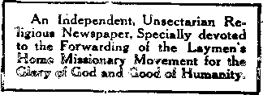

Vol. II
LONDON.
No. 12
The Most Precious Text
t,Fm God to loved the world, that he gave his omy begotten Son, that whosoWW. MitVtffi in him should not perish, but have everlasting life.”—John 3:16.
95THE first thought connected with thia W text, dear friends, is the peculiarity of the fact that the God of all grace, the Almighty, the All-Wise, the All-Just,. should have love for the world of mankind. It would surprise none of us if the Apostle had written that God greatly loved the holy angels a^id that he would do any and Everything for their protection and Messing. We-would have said, “It is
t like him. Of course he would do They have always been loyal, al- . J been true. They are noble im-
of himself in character.” If the . ‘ment had even been that God so ; d his saints—that, 'blemished by the --fections of the flesh, he had acE them through the merits of sacrifice and counted them as ? ._-rfect and entire in him—this would : ave caused greater surprise than God’s J^ve for the angels. And yet we would .ave said, "Yes, it is just like our heav. nly Father to be abundantly gracious and to remember the sins and iniquities no more against those who have fully turned to righteousness and by faith have been covered by the Redeemer’s Robe of Perfection.”
"Condemned Sin in tho Flesh'*
It our text were the only one of Scripture to the contrary (but it Is not), it would be an utter refutation of the blasphemous doctrine of eternal torment as the Divine purpose toward mankind. The thought that God erected our race with the foreknowledge and pre-arrangement that the overwhelming majority (all except the saintly “elect”) must spend an eternity of hopeless torture, is thoroughly out of accord with reason, as well as contradictory to our text, “God so loved the world.” Does love plan torture? Does loving provision not imply wisdom in the use of power, that the creature may not be injured, If he shall not be benefited by the program? Is It conceivable that he who com-’ mands us to love our enemies and to observe toward them the Golden Rule would himself ignore that Rule and injure, not only his enemies, but also the Ignorant, the superstitious, the great masses of mankind—of whom the Apostle declares, “The god of this world hath blinded their minds?”—2 Cor. 4:4. x
Let us have done with such nightmares, such “doctrines of demons,” as the Apostle styles them. Let us begin to know our Creator, our heavenly Father, for such knowledge is a step toward love forhlm, and hence toward life eternal for ourselves. It was our dear Redeemer who said, “This Is life eternal, that they might know thee, the only true God, and Jesus Christ, whom thou hast sent.” (John 17:3.) Not only the world perishes because of lack of true knowledge of the Creator, but many of God’s people are similarly hindered. As the Scriptures declare, •‘My people are destroyed for lack of knowledge.”—Hosea 4:6.
It should be understood by all that God’s love for mankind, as well as Divine Justice and Wisdom, prepared man’s penalty—"The wages of sin is death” (Romans 6:23). It Is In full harmony with this that we know that the Lord drove our first parents out of the Garden of Eden and placed the cherubim with flaming sword to prevent their return' thither. It was a merciful provision, because had they continued <■. have access to the trees of life af^^rs to continued existence, It -Meant everlasting life
fer>»?a>^S4A<^./iovglve sinners eter^ an*’ to ©e^setuato a conditio®
''' • ■ v J
The Scriptures inform us that it was tn accord with the Father’s arrangement and the giving of his Son that he made to him the proposition to become man’s Redeemer and uplifter and the Head of the Church, to receive glory, honor and Immortality. It was in view of this proposition as a whole that we read of our Lord that he, “For the joy that was set before him, endured the cross, despising the shame, and is set down at the right hand of God” (Heb. 12:2). Again, “Who gave himself a ransom for all, to be testified In due time” (I Tim. 2:6). He left the heavenly glory and took upon him the human nature and, as the man Christ Jesus, gave himself as the Ransom for all.
Whosoever Believeth In Him
God’s love is not only large and broad, but it is also deep and high. In blessing mankind he purposes . the largest blessing possible in the wisest manner. He will not justify the heathen in their ignorance nor justify willful rebels. He limits his favor by two conditions:
First.—The blessing through his Son shall go only to those who intelligently know of it and by faith accept it
Second.—It shall be available only to" those who desire to come into harmony with Divine laws as Obedient children, -t
This presents a difficulty to our minds until we come to understand what the Scriptures call the Divine Flan of the Ages. Until we understand that Plan, we are inclined to find fault with the Divine arrangement and with ourselves and with fellow-Chrlstlans and generally to be uncomfortable and disappointed in proportion to the largeness of our hearts and our Interests in God’s character and in humanity. We find fault with ourselves and others that the world has not long ago been evangelized and made acquainted with God. We find fault with God that he Is allowing the heathen td go down into death at the rate of ninety thousand per day, with no knowledge of the “only name,under heaven whereby we must be saved.” We squirm and twist in our reasonings in trying to justify this course and are still further harassed by the horrible nightmare of eternal torment, which teaches that the heathen not only do not get eternal life in glory, but that they do get eternal life In mispry.
Alas, how true are the Lord's words through the Prophet, "Your cpvenant With death shall be disannulled, and your agreement with the grave shall not stand. From the time that it goeth forth It shall take you; for morning by morning shall it pass over, by day and by night; and it shall be a vexation only to understand the doc-trine.”—Isa. 28:18, 19.
The Plan of the Agee
The key to the whole Mystery M that God first selects from amongst mankind a special class of those able and willing to exercise faith in him, to receive the Spirit of Christ, and to demonstrate their loyalty by walking in his steps. These, he tells us, he is calling out of the world by what the world calls the foolishness of preaching. These he Is testing as respects their faith and loyalty and using the trials and oppositions of this present time as chiseling processes and burrs to shape and polish and prepare the precious stones for their glorious setting in the heavenly Kingdom. There are not many of these altogether. “Fear not, little flock; for It Is the Father’s good pleasure to give you the Kingdom” (Luke 12:82). They are being selected out of aU denominations, kindreds and tongues, and amongst are not many great, wise, nobio chiefly yw cS
of sin, rebellion, anarchy, In the universe to all eternity would have been discreditable to the Divine Character and Government, as well as injurious to his creatures. God’s determination, therefore, from the very beginning was that he would have a clean universe, and hence the law, “The soul that sln-netb, it shall die”—a law which ultimately must prevail as respects the fallen angels and Satan, as well as in respect to mankind.
Thus we have the assurance that ultimately nothing shall mar the harmony of the universe. What the Scriptures point out respecting the future -will prove true. "And every creature which Is in heaven, and on the earth, and such as are In the sea, and all that are in them, heard I saying, Blessing, and honor, and glory, and power, be unto him that sitteth upon the throne, and unto the Lamb for ever and ever” (Rev. 5:13). Thus the t*me will come When sin and all who love sin will ba destroyed and when, as a consequence, the Scriptures assure us, “There shall be no more death, neither sorrow, nor crying, neither shall there be any more pain; for the former things are passed away. And he that sat upon the throne said, Behold, 1 make all things new.”—Rev. 21:4, 6.
"That He Gave His Serf*
God’s love for sinners, as we have seen, was so great that he would not allow them to have everlasting life, because that would mean to them everlasting imperfection and sorrow, etc. But our text tells us of a still further step that the Lord took—and hence shows a still further love.
“He gave his only begotten Son.” How? When? Where? What for? We answer, He did not give his only begotten Son to suffer eternal torment for us. Thank God, No! Yet, if eternal torment had been the sinner’s penalty, God’s Son could not have been their Redeemer, except by paying that awful price. As we have seen, however, the penalty was not that, but a death penalty—"The soul that sinneth, It shall die;” “Dying thou shalt die;” “The Wages of sin is death.” God gave his only begotten Son to die for our Bins that he might bring us back to God. Our Lord’s death on Calvary was the sufficient price for the sins of the whole world, although he did not apply that price directly to the world, but to believers of this present time; and, indirectly, through the consecrated believers, the Bride of Christ, it will be applied to mankind in general, thus permitting the Church class to "fill up that which is behind of the afflictions of Christ,” and to share with him in the sealing of the New Covenant for Israel, and through Israel for the world. “Behold, the days come, saith the Lord, that I will make a New Covenant with the house of Israel, and with the house of Judah.”—Jer. 31:31.
Left the Heavenly Glory
Nor should we understand that God compelled his only begotten Son to die for us, but rather, as the Scriptures Inform us, he set before him a great prize, so that Jesus counted it all joy to lay down his life that he might be the heavenly Bridegroom to the Church and be the Mediator of the New Covenant for Israel and the world of mankind. How wise, how just.mre God’s arrangements! Though he possesses all power, yet he would not Infract the rights or liberties of even the most humble of hie creatures, much less fth® aS
this world, rich In faith, heirs of the Kingdom.
This “little flock” of ‘saints,” this •‘royal priesthood,” with Christ their Redeemer, their Lord, their Bridegroom, their Head, their Chief Priest, are to constitute the Kings, Priests^ Judges, Rulers of the world of mankind. Then in the age to follow this one, in the Millennium, God’s time shall come for dealing with mankind as a whole. In co-operation with the Kingdom work will be the binding of Satan and every evil influence amongst men, and the letting loose of every good Influence and every helpful truth.
This Is God’s provision for the world of mankind, whom he so loved. Not merely for the saints, who already have the hearing ear, the seeing eye, and the appreciative heart, is God’S loving provision, but for poor, degraded humanity, which, through centuries of sin, has almost entirely lost the image and likeness of its Creator. The promise for these is that they shall be privileged by resurrection processes to return to full harmony with the Lord and to repossess the blessings and favors lost by father Adam when he sinned—blessings and privileges redeemed for Adam’s race through the merits of our dear Re«t deemer’s sacrifice at Calvary.
Believers Might Net Perish
Notice how the various features efl our text intermesh with each other, like the cogs and pinions of a well-fitted machine! Let us get rid of the wrong thought that so long has befogged our reason and robbed our hearts of the proper reverence for our Xrealor!, Let us get rId of the thought that perish” means to preserve in eteiM nal torture, thus confusing the minds of the Lord’s people and the world to the true teachings of the Scriptures. Perishing, of course, means perishing —to lose life, to become extinct. Man, originally made in God’s Image, war prepared for eternal life; eternity war to be his destiny. But sin forfeited those life-rights. He came under a sentence of death—that he should perish like the brute beast Hence, hla only hope of a future life is In the Redeemer and the resurrection whicH his sacrifice has secured.
God’s Provision
Man’s intelligence and higher or< ganism could avail him only on ^ondi-tlon that they would be used In harmony with his Maker’s reasonable and just requirements. Otherwise he must die the death, as being even less worthy of prolonged existence than the brute. Note how our text points out that God saw that In the race of Adam there would be many who, If they understood the light and the Truth and had it in contrast with the wrong,, would be glad to return to harmony with God—glad to accept of Christ and Restitution privileges and blessings, and to come into full accord with the Almighty and with Jesuj, and to have back again the life-rights forfeited by father Adam. Hence God’s provision fir the race as a whole—that they might not parish as tho brute b^aet, but attain to eternal life again, attain to all that was lost In Adam, all that was redeemed by Jesus Christ our Lord—eternal life, fellowship with God the Father and the Son and coxnmips nion with the holy Spirit
“God moves in a mysterious waj His wonders to perform.”
These words of the poet are wonderfully true! Truth Is, indeed, straarm than fiction! The Divine Plan for human salvation Is higher and deeper, longer and broader than any of us dreamed of! Yet it Is most exacts nothing about It is sllp-shodjor Irregular. While the blessed privileges of, reconciliation will be granted to all r * Adam’s Shag wJU Bfi flmM 1®^
Everybody s Paper.
P«b!i»b®^ fey
THE INTERNATIONAL BIBLE STUDENTS ASSOCIATION, CRAVEN TERRACE, LONDON, W,
Secretary of State Knox in concluding a stirring address before the graduating students of the University of Pennsylvania, spoke as follows: “We nave reached a point where it is evident that the future holds in store a time when war® shall cease; when the nations ofi th® world shall realize a federation as .?ea„ and vital as that ww subsisting between the component Smarts of a single state; when by deliberate international conjunction the strong shall universally help the weak, and when the corporate righteousness ©f? th® shaH compel unrighteousness .to ffisawsa? and shall destroy the habitation® of cruelty stffi lingering in the dark places of the earth. This is •the spirit of the wide world brooding or things to come.’ That day will be the Millennium, of course; but in some gons® degree it will surely be real-tedl this dispensation of mortal
May Sin Again nvada the Earth When Once Rooted Out?
WiH there be any danger that at some future time sin may again invade the" world, again degrade God’s human representatives and obscure the glory of the Divine creation? We answer, no, never. The guarantee of this is in the Lord’s words that there shall be no more death. So surely as there will be sin, th® penalty of sin must follow it, hene® th® guarantee that there will be no mor® dying, is the guarantee that there wffl be no mor® sin. But how can "Ws' b® guaranteed and at the same time man’s free moral agency be preserved? The Scriptures give the explanation, telling us that at the close of the Mediatorial Kingdom, when Messiah shall have accomplished his work of putting down all opposition and bringing all the willing and obedient up to perfection of human nature, then he shall deliver up the kingdom to God, even the Father. The next step in the Divine program as outlined in the Revelation is that the world, no longer under the Mediatorial covering of the Redeemer and no longer needing such a covering because perfect, will be subjected by the Father to severe tests of their love and loyalty, their obedience, similar to the test which came upon father Adam in Eden, when he was perfect
The description of Revelation is that Satan will be loosed to tempt and deceive all the people whose number will then be as the sands of the seashore. What proportion he will succeed in deceiving cis not intimated, but the gen-‘ eral statement is made that all those who are deceived by him in that crucial test will be utterly destroyed with Satan in the Second Death, which, symbolically, is represented by the “lake cf fire.’’ This will leave a clean, Universe»as represented in the Scriptures, and “every voice in heaven and in earth and under the earth will be proclaiming praise, honor, dominion, might and power to him that sitteth on the throne and to the Lamb.” Blessed '‘ are our eyes and our ears and our un-derstanding hearts which are already enlightened in advance of the world, that have already learned of the glory of God. We with the seraphim proclaim, “holy, holy, holy, Lord God Almighty,” and we rejoice that the time fs near at hand when the whole earth Shall be filled with his glory.
g Luke 23:43.—This greatly misunder° I stood text explained in Peoples Pulpit, Vol I, No. 7.
Asp fro® sampS* .
The Savior of the World
^SeM^ X Mag you g@@& tidings of great joy which shall be to oil people; for unie you if
born this Say ia the eity of David, a Savior, which is Christ the Lord”—‘Luke 2:10-14o
*5fT matters not that December 25th is sllnot the real anniversary of the Savior’s birth, but probably the anniver- ' sary of the annunciation by the angel (Gabriel, the anniversary of the Virgin Mary’s conception, our Lord being born nine months later on the calendar, or about October 1. One so great, whose birth, death and resurrection from the dead mean so much to the human family, may be remembered and celebrated any day, every day, by all those who appreciate what he has done for our race. Since, then, the majority of Christian people have become habLu-ated to the celebration of December 25 as our Lord’s birthday, we need make no protest, but join with«all in celebrating that day with rejoicing of heart, giving gifts and remembrances one to another, thus copying Divine favor, which gave to mankind the Son of God as a gift cf mercy and love for our redemption.
For four thousand years and more the promise of God, clothed in more or less of obscurity, had been given to mankind, intimating that ultimately the great curse of sin and death, which had come upon the world through Father Adam’s disobedience in Eden, would be rolled away, and instead of a curse (a blight), would come a blessing of the Lord with life-giving refreshment. In various types, figures and shadowy promises this lesson had come down through the ages to the time of our Lord's birth, especially among the Jews, who were the Divinely favored and covenanted people. And since the Jews were of a commercial spirit many of them were to be found in all parts of the civilized world; and thus among every people the faith in the one God and the hope of Israel through a Messiah was more or less made known, so* that at the time of our Lord’s birth we read. "AIL men were in expectation” of a soon-coming Messiah. Doubtless this expectation was built upon the interpretation of Daniel’s prophecy, which we now see clearly marked the year of our Lord’s majority, when he was 30 years of age, and made his consecration to his work and received the begetting of the Holy Spirit, his anointing as the great antitypical High Priest and as the great antitypical King over Israel and the world.
From Bethlehem to Nazareth
In olden times there were honorable Cities and mean cities. Nazareth was generally recognized as one of the latter, while Bethlehem was distinctly one of the former—the city of David, Israel’s beloved King. The Scriptures explain to us that Mary, our Lord’s mother, and Joseph, her husband, were both of the lineage of David, and that in a seemingly accidental manner, the prophecy was fulfilled which foretold that Messiah would be born in Bethlehem.—Micah 5:2.
The Roman Empire at that time bore rule over the whole world, the Jews being subject to it, but waiting expectantly, restlessly, for the coming Messiah, who would deliver them from being subject people and make of them the ruling caste of his Kingdom, the dominion of the world. Rome’s great Emperor, Caesar Augustus, was in power at this time, and had sent forth his decree for a polling or census of the whole world for purposes of taxation, etc. Luke informs us that it was in response to this royal decree that Joseph and Mary went up to their native city to be enrolled, and that thus it was that Jesus was born in Bethlehem, and on account of the great concourse of people at the time and for the same purpose, accommodations being scarce, the stable of the inn, or khan, was used by some as a lodging. Joseph and Mary, being of the late comers, were forced to occupy these humble quarters, and thus it was that the King of Glory, whose Kingdom is by and by to rule the world, was in the time of his flesh born in a stable and cradled in a manger.
The Angels and the Shepherds
Noble shepherds those must have bee® to whom the Almighty sent the ®ag®SS@ m@ssag® respecting ths birth of 5®®®®, the sszstgs- which has come do^n through the ages and has reached our ears—the message which thrills us the more in proportion as we are able to grasp its meaning. First a single angel appeared to the shepherds and allayed their fears, saying: “Fear not; behold I bring you good tidings.” It would appear that fear is one of the dominating impulses of the human mind, especially in conjunction with any revelations from the Lord. The same is true today with all except the comparatively few who are well informed respecting the Divine character and plan. Thus the subject of religion is obnoxious to the world in general—a subject which they prefer to avoid because of a feeling of guilt and a dread of further knowledge of condemnation.
“Good tidings,” is another translation of our word Gospel. How beautiful the thought that the Gospel is really and truly good tidings! Alas! for the misrepresentations of God’s plan, under which so many of his true people misunderstand his character and his Word and apply the term Gospel to their various messages from the dark ages, teaching purgatory and eternal torment as the portion of the race. Let us get away from this false thought and get the truth that the Gospel is good tidings. The angel elaborated, saying that his message was “good tidings of great joy, which shall be unto all people.” Ah, thank God, his plan Is wider and deeper and higher and grander than anything we had ever conceived. The Gospel message is not merely to be good tidings to the comparatively few that now have ears to hear and eyes to see its beauties, but in God’s due time it is to be good tidings of great joy to all people.
The Cause, the Logic, of the Message
The message took cognizance of the fact that it was to reasonable people, who would want to know why the unchangeable God, who . had once pronounced a curse, sho?jld at any time so emend and alter matters as to supplant the curse with a blessing. The messenger states the philosophy of the Divine Plan. “Unto you is born this day a Savior, which is Christ (Messiah) the Lord.” There we have the key to the entire Gospel statement of how God could be just and yet now be the justifier of sinners who accept Jesus. The word Savior here signifies life-giver, and how beautiful is the thought that as death is the wage of sin, the curse upon the race, this Messiah who was bora is to be the one who will rescue the race from the sentence by giving them life again. The explanation of how he would give life •was not given, nor was it necessary at that time; but now, in the light of developments, and with the explanations furnished through the Spirit, in the New Testament, we see how our Lord’s voluntary sacrifice of his life, dying the just for the unjust, settled the claims of Divine Justice against Adam and thus incidentally against all who shared his sentence.
A Prophecy of Good Things
Yes, the angelic message was a prophecy of good things to be accomplished for the Church and the world during the Millennial Age. The Church is to have the first blessing. The first resurrection is to be composed only of the blessed ana holy who shall live and reign with Christ during the millennium, the thousand years in which Satan shall be bound, and when the good influences of truth and righteousness shall enlighten the whole earth. The declaration of the Scriptures is that the deliverance of the Church will come early in the morning of that Millennial Day, as the prophet declares, “God will help her early in the morning.”—Psalm 46:5.
It will be during the Millennial Age that this prophecy of the angel will
have its fulfilment, and the great Sav-fior who has already redeemed us by his sacrifice will stand forth as the King, the glorified Messiah, and establish his dominion of righteousness in the world for the blessing and uplifting of every member of the race. ~ In harmony with the words of the Apostle, those will be “times of* refreshing,” “times of restitution of all things spoken by the mouth of all the holy prophets since the world began.” (Acts 3:19-21.) If the Lord had based the hope of the world upon some works of merit or righteousness of the world’s doing, then, indeed, we might have feared—indeed, the more we know of the world the less hope we would have. But, on the contrary, the Lord has based the entire proposition for the future blessing, not upon our worthiness, but upon the worthiness and sacrifice of his Son. "To you is born a Life-Giver, which is Messiah, ths Lord.”
The Angels' Song
It was after the giving of the message of good tidings of great joy by the heavenly one that a host of angels appeared to the shepherds, saying, “Glory to God in the highest, and on earth peace, good will to men.” This, too, is a prophecy. It has not yet been accomplished, but will be fulfilled in every particular in God’s due^tlme, which, we believCi is now nigh, even . at the door. Not yet does God recetvs glory in the highest, not yet is there peace among men. Quite to the contrary. God’s name is blasphemed, not only by those who vulgarly and in ribald jest take the Divine Name in vain, and not merely by the heathen who worship devils and think they are gods, but even by Christian people, God’s name is blasphemed every day. For be it known that blasphemy is any dishonorable misrepresentation of the character of another. God be merciful to us, but at some time or other doubtless everyone of us here present blasphemed the holy name in this manner ‘—by misrepresenting the Divine character and Divine Plan, by picturing the God n* toa.and. Tn»ro,y . . .
truth as the originator, the planner, the perpetuator of the eternal torment of the great mass of his creatures, born in sin and shapen in. iniquity, born to sin as the sparks to fly upwards.
But the Lord had mercy upon us because we did it Ignorantly. And we also should have compassion upon others who still Ignorantly misrepresent our God, and our energies should be "continually bent to their assistance, that the eyes of their understanding might open more widely to perceive the lengths and breadths and heights and depths and know the love of God which passeth understanding. •
Noting that peace on earth and good will to men have not followed the Savior’s birth thus far, and in discerning that this is a prophecy of. what is. to be accomplished during the existence of the Messianic Kingdom, many have been inclined to change the translation of this verse so as to have it read, . “On earth peace among men, in whom he is well pleased.” But even by thus changing it the statement would not be true, for even the Lord’s people have no peace on earth. Whatever peace they have is in their hearts, and , based upon their faith in the Lord and in the glorious things which he has promised. Our Lord himself and the Apostles testified to this, assuring us that whosoever in this. present time would live godly should suffer persecution, that a man’s foes would be they of his own household, etc. (2 Tim. 3:12; Matt. 10:36). Let us not confuse-1 ourselves nor abridge the testimony of the Word, but with the eye of faith look forward to the day of Christ, in which all these glorious things shall have their fulfillment, in which peace shall indeed fill the whole earth with the knowledge of the glory of. the Lord, bringing Divine favor and rolling away the curse from-the entire groaning creation, as pointed cut by the Apostle.—Rom. 8:22.
“WHERE ARE THE DEAD?”
This sermon was published in Peoples Pulpit, Volume one, Number 3. The interest aroused and the great demand for copies of thia sermon have bees remarkable. A sample ©opy will be mailed to any one free.
Earth to Be Filled With God’s Glory
JtThe glory of the Lord ie revealed and ail flesh ehall etc t* together,1"—Isaiah 40:5.
’VCjjHH.iJ It 19 quite true that the **■* heavens declare the glory of God xnd the earth showeth his handiwork, it is also true that but few appreciate these facts. Few see the glory of the Lords few see the glory of the sun Uik! moon and stars, and their wondrous harmonies of movement and relationship, And while the earth shows God’s handiwork and his provision for the necessities of all his creatures in hill and valley and plain, grain0 fruit and flower, beast, bird and man, the great majority of the race .accept divine blessings daily with but little appreciation •— with but little thankfulness. The majority, as the Apostle declares, are “blind and cannon seo afar off.”—2 Peter 1:9.
,^’or need we wonder that it is only those who have the eyes of faith, only those whose eyes of understanding have been opened, wh© can appreciate the divine g'iortos arto benefits at th® present time. When w© look around us and see that sin and death are reign-rq; that their sting has blemished svery pleasure, every joy, every beauty, the natural inquiry is, Why does not ihe Creator of the Universe rule amongst the children of men, overthrow Satan and sin and death and all their train of evils, and give to Ged’s creatures such blessings as might naturally be expected from such a beneficent Creator and Father?
A satisfactory answer eomes to us from but one direction—the Bible. True, infidels and higher critics generally tel! us that nature is our God 3.r.d Creator and is without sentiment, Is merely an operation of laws which Egnoro man’s noblest sentiments of Justice, love, mercy, etc. But this answer is not satisfactory to the reasoning mind, which feels assured that the Creator cannot be inferior to, but must •>e the superior of the created being. —‘Tenccj reason tells us that he who termed the eye sees even better than he who formed the ear hears bet-
Tears Not Yet Wiped Away
All these and many more Scriptures Imply what we know to be the case, that the knowledge of the Lord does not prevail now, that the glory of the Lord is not now seen, that the tears of humanity are not now wiped away. Whoever believes this Scripture looks forward to a glorious coming day, the Golden Age. Whoever* doubts this testimony, viewing it from the standpoint of the higher critics, loses the power, strength and help which he might have through its acceptance. Let us learn more and more to take the Lord at his word and thus have more of his joy, his peace and his love shed abroad in our hearts, because of having the true hope built upon the sure foundation of Divine testimony.
God Bless the Missionaries
Our hearts go out toward those who have consecrated their lives as missionaries to carry the message of Divine truth and grace to the twelve hundred millions of heathendom. We are glad to know through missionary reports that a few here and there become Christians, and that many children are gathered into schools where they are taught various branches of useful knowledge. But no reasonable mind can hope that ail the efforts—if doubled, if trebled, if multiplied ten times—would accomplish the desired results and blot out the darkness and fill the earth, with the knowledge of God. On the contrary, we see that tna number of heathen is today twice as great as it was a century ago—six hundred million's then, twelve hundred millions now. V7e see further that the four hundred millions accredited as Christians in such statistics include so many goats, so many wolves in sheep’s clothing, and so many ring-streaked and speckled sheep as to contradict the thought that Christendom is the Ideal to which the Lord intends to bring humanity. Indeed, we may feel sure that if all the missionaries werg
tei than do we; and he who gave us not.Ju qualities of heart and mind has the same on a higher and more complete plane; that at the very most we were merely made in his image; and hero the Scriptures step in and assure ms that all this is true, but that we have lost much (some more and some les») of the Divine likeness through the fall, through sin and Its penalty—= "hying thou shalt die.”
Weeping Endures For the Night
The Lord, speaking to ub through the prophet, comforts us with the thought that “weeping may endure for a night, but joy cometh in the morning" (Psalm 30:5). The era of the reign of sin and death is thus figuratively spoken of as a night time, a dark time, when the Sun of Divine Righteousness and glory does not shine upon the human family—when only the reflection of his glory may be seen In the stars of hope and the moon of the Mosaic Law. It is in harmony with this that -other Scriptures assure us that darkness covers the earth—the most enlightened of the human family—and gross darkness covers the people^ the heathen.—Isa €0:2.
As the poet has expressed it, the human family are “like children cry-Ing in the night.” With the morning Bun will come the termination of all our troubles, our sorrows, our crying end our dying, "for the mouth of the Lord hath spoken it.” The morning of the New Dispensation, the Millennial Minning, will be ushered in, the Bible assures us, by a great time of trouble, a great thunder storm, from behind which the Sun of Righteousness shall arise with healing in its beams, to flood the whole earth with the light of the ’’knowledge of the Lord aj the waters ©p'w&r the sea.”--Isa. 11:9.
These various Scriptures Snfiie&t® that the knowledge of the Lord is to come in the Millennial. Age, that then the tears will be wiped from off all fsees; that then the Lord’s blessing and a ipllftlng influence will be with t- ery creature; that then the darkness wfil be over and the true light will flesh, which will include those who have gone down into" the prison house of death, the tomb, sheol, hades, dur-
The Hope if Immortalltj
’"FElIS subject, which has been bo mis-understood, is convincingly and Scriptur&ily treated in Peoples* Pulpit, Volume 2, Number 4.
Send peat card far free samsla.
to be called home and a thorough-going work attempted among the four hundred million professed Christians, the results would still be unsatisfactory.
The church does not possess the power to more than gloss the fallen human nature—to more than partially civilize the masses of the people. The great and deep truths which the Redeemer taught respecting the “narrow Way” and self-sacrificing conditions arranged for his followers in the present time, are now appreciated only by a mere handful of the race. These alone see the glory of the Lord as in a mirror, in the Word, by faith—they "walk by faith and not by sight.” To these alone, therefore, comes any measure of appreciation of the Divine glories and blessings. Of these alone the Lord speaks, saying, “The secret of the Lord is with them that fear (reverence) him, and he will make them to understand his Covenant (promise).” (Psa. 25:14.) To these alone, therefore, is displayed even the reflection of the coming glories in the promises of the Scriptures, which they see and appreciate with the eye of faith. Actually, the glories of the Lord are not revealed to mankind.
The Promise of Our Text
Our text declares that “the glory of the Lord shall be revealed, and all flesh shall see it together.” Here is an admission that the glories are not yet revealed as well as a promise for the future revelation, and that future revelation is not merely to be for the church in glory, but for the world— for all. Neither will it be, as some of our pre-millenarian brethren think, merely for those who shall be so fortunate as to live when the glorious Millennial epoch shall be ushered in. On the contrary, it shall be unto all
Ing the past, and of whom the Lord declares, “All who are in their graves shall hear the voice of the Son of Man and shall come forth.”—John 5:28.
Of course, it was possible for the Lord to have revealed his glory at any time in the past, but the Scriptures inform us that this was not the Divine purpose; that God chose rather to allow the night of weeping and sin and death to give to the world of mankind an experimental lesson on the exceeding sinfulness of sin, as well as to give to the holy angels an object lesson along the same lines, without prejudice to any, but in the interest of all, to cause the light of the knowledge of his glory to fill the whole earth.
The glory of the Lord will not be seen by all flesh during the present Age—not until the New Dispensation Shall remove present blindness and display to the world the love vzhic’i God bore for us all c.a exemplified in his great gift, his Son, an?. the provision made for our recovery from Bin and death through him by his resurrecting power. By and by, when not merely the justice of God, but also his love has been manifested, his power will also be manifest in the overthrow of Satan and in the ^-rv.ngement of all the affairs of the New Dispensation in favor of Adam and his race, in assisting them up out of their degradation and death back to all that was lost in Bden. Finally, the wisdom of God will be seen in having permitted sin, and evil, and death and all the train of connected woes. It will be seen that it was wise to do so as a great lesson for man and for all creation. Thus will the glory of the Lord be revealed, and all flesh shall see it.
God’s Footstool to Be Glorious
The Lord declares heaven to be his throne and the earth his footstool. He has informed us respecting the glory of heaven, and we know of the disorder, darkness, trouble and sin in the earth-prevailing throughout God’s footstool. Do we wonder that he allows his footstool to be thus out of accord with himself, his righteousness, Father’s will, and his love for humanity, was exemplified in his sacrifice as our ransom price. All these assure us that the wonderful powers committed to his care and exercised by him during the Millennial Age t3 effect this return of Divine glory to the earth, will be exercised in full harmony with all the principles of love which he has already so richly manifested in his dealings with our race.
his power, his wisdom, his love, his justice? If so he gives us the assurance that at the second coming of Christ "he will make the place of his feet glorious.” (Isa. 60:13.) This is in full accord with all the other testimonies on the subject of the great work of the Lord Jesus in the earth— the restitution promises to begin at the second coming. (Acts 3:19.) All are to lead up to and finally accomplish the renovation of the earth, of God’s footstool, to make of it a paradise of God as promised, to restore mankind once more to his original position of king of earth, subject to his Heavenly King.
Let ub not forget that while Divine glory will be manifested in the perfections of earth, its fruits, its flowers, the beauties of nature, etc., yet the grandest exhibition of Divine glory will be in .mankind himself. To appreciate this we must remember that God created man in his image and likeness and for his glory. We must remember also that it is written of our race, "All have sinned and come short of the glory of God.” God’s glory in us as a race has been blemished; we no longer as a race properly reflect the Divine image and likeness. In harmony with this v/e can see that all the work of restitution, all the blessings coming to the earth in material ways, would not fully show forth the glory of the great Creator so long as man, his chief handiwork, would be imperfect, blemished. Hence the grandest feature of restitution held out before us pertains to mankind himself. The return of humanity to its former estate of the Divine likeness will be the crowning climax of the Divine Plan, set in operation when man was created by Jehovah, who, we are assured, is working ail things according to the counsel of his own will.—Sph. 1:11.
Th® King of Glory
Th® titles of this great King of glory who is to accomplish so great a work are full of satisfaction; he is to be the "Prince of Peace,” the "King of Righteousness,’’ the “Judge,” tha “Everlasting Fath*?-’ to race; snd W 'to u
Througii the prophet the Lord gives us the message respecting Messiah and his work—"He shall not fail nor be discouraged until he shall have established righteousness in the earth.” (Isa* 42:4.) Our Redeemer’s sojourn with our race in the valley of the shadow of death and his sufferings, demonstrated his faithfulness—he did not fail, he was not discouraged. In harmony with the Divine will, the church, his espoused Bride, continually under his guidance, when called to walk in his steps and to suffer for their loyalty to the truth, by his grace shall neither fail nor be discouraged —an elect company of them, all overcomers; more than “conquerors,” will eventually be found. Then all these together, the jewels of the Lord gathered to himself, will shine forth in the Kingdom as the glorious Sun of Righteousness for the healing and restoring of all the families of the earth. (Matt. 13:43.) A picture of this future work of establishing righteousness in the earth—abolishing sin and death by the uplift of the human family out of these—is given us in the symbols of Revelation. There the glorified, elect church, changed to spirit conditions, is pictured us the heavenly Jerusalem, in the midst of which is the throne of God’s glory. "God is in the midst of her.”—Psa. 46:5; Rev. 21:2, 3.
The symbolical picture shows a river of life flowing from the Throne, and on its either bank grew trees whose leaves are for the healing of the nations,- while the spirit and the Bride glorified say to all the families of the earth, "Come and take of the water of life freely,” and "whosoever will may come.” (Rev. 21:1, 2, 17.) In proportion aauuny will fall into line with the righteous laws of the Kingdom and into loving obedience to the great King, in that same proportion will he b© _ drinking of th© water of life provided by the great Life Giver—in that same proportion will he b© rising out of his condition of sin, imperfection and dy= ing, up and back to all that was lost by father Adam.
EVERY THINKING
SHOULD READ
“Studies
I in the Scripture”
Respecting the first volume of thtw work THS ATLANTA CONSTITUTION Bay# editorially:
“It is impossible to read this book without loving the writer and pondering his wonderful solution of the great mysteriet, that have troubled us all our lives. There is hardly a family to be found that has not lost some loved one who died outside the church—outside the plan of salvation, and if Calvinism be true, outside of all hope and inside of eternal torment and despair.
"This wonderful book makes no assertions that are. not well sustained by the Scriptures. It is built up stone by stone, and upon every stone is the text, and it becomes a pyramid cf God’s love and mercy and wisdom. There is nothing in the Bible that the author denies or doubts, but there are many texts that he throws a flood of light upon that seem to uncover its meaning.”
The set of s>x volumes, cloth, 3,000 pages, is supplied by the BIBLE AND TRACT SOCiETY, CRAVEN TERRACE, LANCASTER GATE, LONDON, W t for the usual prica o? ©ne such vslvrws, Iha 3tB9Sasdi8e OF 88s
DO YOU KNOW?
Matters of Importance to all Thinking People— ESPECIALLY TO CHRISTIANS^
DO YOU KNOW that the Lord more.thus two thousand jears ago gave, through the Prophet Daniel, a clear description of the times in which we are now living?
DO YOU KNOW that the Bible, in referring to thia present time as “ the time of the ehd,” does not signify tbe destruction of the earth, but the end of the present dispensation, after which a new age will be introduced— the Millennium ? 11 The earth abideth
f <reyer.”—-Eccl. 1:4.
DO YOU KNOW have you specially noticed, the several propositions in Daniel’s prophecy concemirg “the time of the end”? They read thus :--In the time of the end (1) many shall run to and fro; (2) e nd knowledge shall be increased ; (3) and the wise [virgins] shall understand ; (4) but none of the wicke i shall understar i. (6) And at that time Michael [Christ j skall stand up [begin His reign]; (6) and there sL<.'.l be a time of trouble, such as never was since there was a nation—Dan. 12:9, 4, 10, 1.
DO YOU KNOW that according to the Scriptures “the time of the end ” above mentioned began in a.d. 1799, and will continue until a d. 1915 ?
DO YOU KNOW that the most rapid means of communication in 1799, the beginning of “ the time of the end,” was on horse-back, while now telephones and telegraphs unite cities, nations and continents ?
DO YOU KNOW that the first effective steamboat was built a.d. 1806 ? and that the first effective locomotive, the Ironsides, was built a.d. 1831 ?
DO YOU KNOW that Sir Isaac Newtcn, the great Christian philosopher, who died a.d. 1727, studying this very prophecy said, on the strength of it, “ I should not, wonder if some day men will travel at the rate of fifty miles an hour ?”
DO YOU KNOW: that Voltaire, the great infidel philosopher, who died a.d. 1778, when much mo«-e was known of the power of steam, despising this prophecy of God’s Word, declared that it had made a fool of Sir Isaac Newton when it led him to make the above statement?
DO YOU KNOW that the predicted “running to Send fro ” is being fulfilled by yourself and others as you travel everywhere by steam-boats. aieaun aad eleotrio cars, etc.?
DO YOU KNOW that knowledge is greatly increased, in harmony with the prophecy?— and can you not discern such plain signs of the times in which we are now living?
DO YOU KNOW that less than four centuries ago illiteracy was so general that the English Parliament passed a law providing for those of its members who were enable to read ; while now ability to read and vrite is general, even amongst the poorest classes?
DO YOU KNOW that free schools were started as Sunday Schools in 1784, and hence that knowledge began to increase greatly with “ the time of the end,” 1799 ?
DO YOU KNOW that not a single one of the now many large Bible Societies or Tract Societies was started until 1804, because only then was there much use for reading matter for the masses ?
DO YOU KNOW that a right understanding of God’s Word not only ad is to the wisdom of the wise, but also “ maketh wis^ the simple?”—Psa. 19:7.
DO YOU KNOW that God promised that in this “ time of the end,” in which we are living, the wise [toward God—not the worldly —wise] should understand hitherto secret things of His plan and Word ?—And do you wish to be one of God’s humble “wise virgins?” —1 Cor. 3:18-20.
DO YOU KNOW that the present social order is not thoroughly satisfactory to any good men —rich or poor—although no human instrumentality is able to arrange for and introduce a better one ?
DO YOU KNOW that Christ will introduce a better, a perfect, social arrangement during the Millennium ; and that He taught us to expect, watch for, and pr&y for that Kingdom; saying, “ Pray ye,—Thy Kingdom come, Thv will be done on earth as it is done in heaven?” If you have sincerely joined in that prayer, you will rejoice in the evidences that its fulfilment is at hard.
DO YOU KNOW that the Millennial age was specially prea -hed about by the Apostles as “ The Day of Christ.” “ The Kingdom of God,” etc.?—and that it was the earnest faith of the early Church?—Phil. 1:6; Mark 1:14.
DO YOU KNOW of the Appstle Peter’s reference to it, in Acts 8:19, 21, where he aallr it “ th* times of restitution of all thing.
whibh God hatk by .ne rmuth of all the holy prophets.
DO YOU KNOW < St. Peter there declares that these time’ o.essing will not precede, but will follow, the Second Coming of our Lord Jesus ?
DO YOU KNOW that the prophecies and B’gns which now herald the second advent of Christ are mucL more distinct than were those signs and prophecies which marked His first advent ?
DO YOU KNOW that the driving of the Jews out of all nations and the resettlement of many of them in Palestine, now in progress, is another sign of the close of the Gospel age and the dawn of the Millennium ?—Jer. 16:15; Rom. 11:25 32.
DO YOU KNOW that the Second Coming of Christ will be as different from human expectation as was His first advent ? and that His day will eome up n theworld unawares— that they will be “ in His days” and that only the wise will know it ?
DO YOU KNOW that the object of the Second Coming of Christ, as well as its manner, is generally misunderstood?—that His coming, according to the Scriptures, means the blessing of all the families of the earth ?
DO YOU KNOW that the Church which God is electing or selecting during this Gospel age is promised a spiritual or heavenly reward ?—to be “made partakers of the divine nature ” (2 Pet. 1:4), and to share with Christ the work of blessing the world during the Millt unium, but that the Lord's provision for those who accept His grace during the Millennial age is a restitution or restoration of the perfections of human nature (lost by sin), in Paradise restored—the new earth ?— Acts 3:19 21; Rev. 21:1-4.
DO YOU KNOW that the Day of Judgment will be a thousand-year-day, and not a twenty-four-hour-day?—and that the word Judgment implies, not merely a sentence, but also a trial ?
DO YOU KNOW that during the world’s great day of trial or judgment (the Millennium) the Church now being selected from among men will be, with Christ, the Judges of the World? (1 Cor. 6:2)—that to prepare them for that service they themse’ves are now severely tried in all points, that they may be able to sympathise with those whom they will then Judge?—and that they shall be kings and priests of God and, as Abraham’s seed, bless all the families of the ear'h?—Rev.20:4; Gal. 3:16, 29; Gen. 22:18.
DO YOU KNOW that not all who worship and say “ Lord, Lord ” shall enter into or be members of that elect Church ? (Matt. 7-21-23) .—■and that not all who have their names upon earthly Uhttrnh rolls, bat only those “ whole names are written in heaven,” and whose names will not be blotted out because of unfaithfulness, will constitute the one Church of the living God.—in all a “little flock? ’— Heb. 12:23; Rev. 3:5; 1 Tim. 3:15; Luke 12:32.
DO YOU KNOW that all the members of the Church are now only probationary members, waiting and striving and hoping for full membership in the Church triumphant at the first resurrection ? —Rev. 20:4.
DO YOU KNOW that the large majority of humanity have never had any trial, because they died in total ignorance of the only name given whereby they can be saved ?
DO YOU KNOW that the Apostle Paul declares that there is one mediator between God and men, the man CLri-1 Jesus who gave Himself a ransom for all [men], to be testified [to all men] in due time ?—1 Tim. 2:6.
DO YOU KNOW that while to many of us the “ due time ” to learn of this grace of God is during the pretent life, yet to the va t majority this “ due time ’’ must be in a future life ; because less than one-third of the human family have ever heard of, so that they could believe on, the only name “under heav»n given among men, whereby we may be saved?” Acts 4:12.
DO YOU KNOW that the Millennial age is for the very purpose of causing the knowledge of the Lord to fid the who'e earth as the waters cover the sea, and to open the eyes of men’s understandings and to unstop their ears that they may hear God’s message of mercy, and see “ the true light which lighteth every man that cometh into the world ?”—Isa. 11:9; 35:5; John 1:9.
DO YOU KNOW that some living in civilized lands have never had e full knowledge of the gospel with a full opportunity to show whether they would choose rig teousness or sin ; be 'ause they have had comparatively little knowledge of righteousness, by either experience or obcervation, and great experience only with sin, within and without?
DO YOU KNOW that our Lord Jesus paid tbe great price for all; to secure for all a full opportunity to gain everlasting life by faith and obed’ence? —L Tim 2:6; Acts 3:22. 23.
DO YOU KNOW that Christ “ is the pro . pitiation [satisfaction] for our sins, and not for ours [the Church’s sins] only, but also for the sins of the whole world?”—1 John 2:2.
DO YOU KNOW that the .Bible teaches both the doctrine of Election and the doctrine of Free Grace ? —the election of the Church during this age, and free grace for the world in general in the Millennial age? and that this harmony, of these two doctrines so long supposed to be in conflict, can be clearly shown from the ? . .________
UNDER THE AUSPICES OF THE
INTERNATIONAL BIBLE STUDENTS ASSOCIATION (THE THIRD OF A SERIES.) OLD MUSEUM, TOWN HALL, KIRKCUDBRIGHT, On FRIDAY, MAY I, at 8 p.m.
WILL ALL BENEFIT? WHEN? HOW?
If Jesus died for ALL, how say some that only the elect FEW will be saved?
If Jesus died for ALL, then, say others, ALL will be saved! Are, then, the warnings of the "Second Death,” “An Eternal Sin,” "Much Sorer Punishment” (than Death), merely empty phrases ?
If Jesus died, as still others say, as the Greatest of Reformers—an Example merely—then why is His name the ONLY name for Salvation?
If there was no Fall, as many now assert, then what need for a j^pisopi?
If we deny the ransom we reject the whole philosophy of the Di'^^N Plan.
- A : i
tome and have your doubts dispelled, reason satisfied, your heart refreshed, the Bible i A life a new reality.
LECTURE BY
M R . ALEX. TAIT,
OF GLASGOW, I.B.S.A. LECTURER.